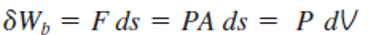
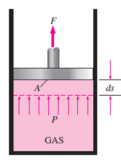
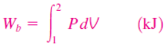
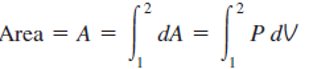
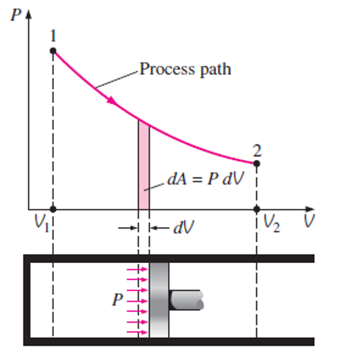

Temperature and the Zeroth law of thermodynamics
Although we are familiar with temperature as a measure of “hotness” or “coldness,” it is not easy to give an exact definition for it. Based on our physiological sensations, we express the level of temperature qualitatively with words like freezing cold, cold, warm, hot, and red-hot. However, we cannot assign numerical values to temperatures based on our sensations alone.
Furthermore, our senses may be misleading. A metal chair, for example, will feel much colder than a wooden one even when both are at the same temperature.
The zeroth law of thermodynamics states that if two bodies are in thermal equilibrium with a third body, they are also in thermal equilibrium with each other
Energy Transfer by Heat
Energy can cross the boundary of a closed system in two distinct forms: heat and work . It is important to distinguish between these two forms of energy.
Heat is defined as the form of energy that is transferred between two systems (or a system and its surroundings) by virtue of a temperature difference.
Heat is energy in transition. It is recognized only as it crosses the boundary of a system.
A process during which there is no heat transfer is called an adiabatic process. There are two ways a process can be adiabatic: Either the system is well insulated so that only a negligible amount of heat can pass through the boundary, or both the system and the surroundings are at the same temperature and therefore there is no driving force (temperature difference) for heat transfer
Energy Transfer by Work
Work, like heat, is an energy interaction between a system and its surroundings. As mentioned earlier, energy can cross the boundary of a closed system in the form of heat or work. Therefore, if the energy crossing the boundary of a closed system is not heat, it must be work.
More specifically, work is the energy transfer associated with a force acting through a distance. A rising piston, a rotating shaft, and an electric wire crossing the system boundaries are all associated with work interactions.
Note that a quantity that is transferred to or from a system during an interaction is not a property since the amount of such a quantity depends on more than just the state of the system. Heat and work are energy transfer mechanisms between a system and its surroundings, and there are many similarities between them:
Both are recognized at the boundaries of a system as they cross the boundaries. That is, both heat and work are boundary phenomena.
Systems possess energy, but not heat or work.
Both are associated with a process, not a state. Unlike properties, heat or work has no meaning at a state.
Both are path functions (i.e., their magnitudes depend on the path followed during a process as well as the end states).
Boundary Work
One form of mechanical work frequently encountered in practice is associated with the expansion or compression of a gas in a piston–cylinder device. During this process, part of the boundary (the inner face of the piston) moves back and forth. Therefore, the expansion and compression work is often called moving boundary work, or simply boundary work.
Consider the gas enclosed in the piston–cylinder device shown in Fig. 3.1. The initial pressure of the gas is P, the total volume is V, and the cross-sectional area of the piston is A. If the piston is allowed to move a distance ds in a quasi-equilibrium manner, the differential work done during this process is


Moving Boundary work
The total boundary work done during the entire process as the piston moves is obtained by adding all the differential works from the initial state to the final state:

The total area A under the process curve 1–2 (Fig. 3.2) is obtained by adding these differential areas:

A comparison of this equation with Eq. 3.1 reveals that the area under the process curve on a P-V diagram is equal, in magnitude, to the work done during a quasi-equilibrium expansion or compression process of a closed system. (On the P-v diagram, it represents the boundary work done per unit mass.)

. The area under the process curve on a P-V diagram represents the boundary work
NEXT PAGE